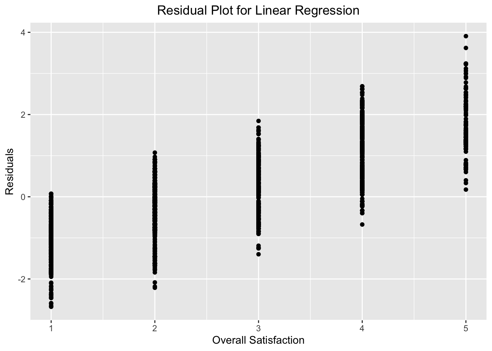

Running regression to develop our subway line ranking system. overall_satisfaction = subway_line_used_most_often + approximate_delay_duration + most_common_reason_for_delay + primary_use_of_subway + frequency_of_delays
All predictors are converted to an ordinal, categorical variable. Assumption, overall satisfaction as a Likert scale 1-5 continuous variable, allowing for linear regression.
#DATA CLEANING
subway_rider_data =
read_csv("data/2019_subway_rider_data.csv") |>
janitor::clean_names()## Rows: 10704 Columns: 19
## ── Column specification ───────────────
## Delimiter: ","
## chr (18): subway_line_used_most_often, use_of_subway_frequency, get_to_subwa...
## lgl (1): is_subway_affordable
##
## ℹ Use `spec()` to retrieve the full column specification for this data.
## ℹ Specify the column types or set `show_col_types = FALSE` to quiet this message.subway_drops =
subway_rider_data |>
select(-survey_stop_borough, -survey_stop_location) |>
drop_na() |>
mutate(survey_id = row_number()) |>
relocate(survey_id, .before = 1)
rider_data =
subway_drops |>
mutate(
use_of_subway_frequency = case_when(
use_of_subway_frequency == "Everyday / Almost everyday" ~ "Every day",
use_of_subway_frequency == "More than once a week, varies" ~ "Several times a week",
use_of_subway_frequency %in% c("Weekdays, Mon - Fri", "~5 days per week") ~ "5 days per week",
use_of_subway_frequency == "Once a week" ~ "Once a week",
use_of_subway_frequency == "Once a month" ~ "Once a month",
use_of_subway_frequency == "Almost never" ~ "Almost never",
use_of_subway_frequency == "Never" ~ "Never",
TRUE ~ NA_character_
),
use_of_subway_frequency =
factor(
use_of_subway_frequency,
levels = c("Never",
"Almost never",
"Once a month",
"Once a week",
"Several times a week",
"5 days per week",
"Every day"),
ordered = TRUE)
)
rider_data =
subway_drops |>
mutate(average_length_subway_ride =
factor(average_length_subway_ride,
levels = c("< 20 min",
"20 - 40 min",
"40 - 60 min",
"60 - 90 min",
"90 min - 2 hours"),
ordered = TRUE))
rider_data =
subway_drops |>
mutate(
overall_satisfaction =
recode(
overall_satisfaction,
"Not satisfied" = "Unsatisfied"),
overall_satisfaction =
factor(
overall_satisfaction,
levels = c("Highly unsatisfied",
"Unsatisfied",
"Neutral",
"Somewhat satisfied",
"Very satisfied"),
ordered = TRUE)
)
rider_data =
subway_drops |>
mutate(
frequency_of_delays = factor(
frequency_of_delays,
levels = c("Everyday",
"A few times a week",
"Rarely",
"Almost never",
"Never"),
ordered = TRUE)
)
#Zip code --> borough
zip_code_data =
read_csv("data/nyc_zipcodes.csv") %>%
select(borough, zipcode)## Rows: 343 Columns: 2
## ── Column specification ───────────────
## Delimiter: ","
## chr (2): borough, zipcode
##
## ℹ Use `spec()` to retrieve the full column specification for this data.
## ℹ Specify the column types or set `show_col_types = FALSE` to quiet this message.#Make sure character type
rider_data <- rider_data %>%
mutate(zip_code = as.character(zip_code))
zip_code_data <- zip_code_data %>%
mutate(zipcode = as.character(zipcode))
#Join
rider_data_full <- rider_data %>%
left_join(zip_code_data, by = c("zip_code" = "zipcode"))## Warning in left_join(., zip_code_data, by = c(zip_code = "zipcode")): Detected an unexpected many-to-many
## relationship between `x` and `y`.
## ℹ Row 6 of `x` matches multiple rows
## in `y`.
## ℹ Row 109 of `y` matches multiple rows
## in `x`.
## ℹ If a many-to-many relationship is
## expected, set `relationship =
## "many-to-many"` to silence this
## warning.#If there's no match, we want to keep the zip_code in the borough column, so we use coalesce to handle this
rider_data_full <- rider_data_full %>%
mutate(borough = coalesce(borough, as.character(zip_code)))
#manually go through remaining zip codes - removing 11135 11290 12105 as they are not real zip codes & also removing one observation that didn't have zip code
rider_data_full <- rider_data_full %>%
filter(survey_id != 2410) %>%
filter(survey_id != 944) %>%
filter(survey_id != 241) %>%
filter(survey_id != 919) #Converting categorical variables to orders
regression_rider_data <-
rider_data_full %>%
mutate(
average_length_subway_ride =
recode(
average_length_subway_ride,
"< 20 min" = "0",
"20 - 40 min" = "1",
"40 - 60 min" = "2",
"60 - 90 min" = "3",
"90 min - 2 hours" = "4"),
average_length_subway_ride =
factor(
average_length_subway_ride,
levels = c("0", "1", "2", "3", "4"),
ordered = TRUE
)) %>%
mutate(
frequency_of_delays =
recode(
frequency_of_delays,
"Never" = "0",
"Almost never" = "1",
"Rarely" = "2",
"A few times a week" = "3",
"Everyday" = "4"),
frequency_of_delays =
factor(
frequency_of_delays,
levels = c("0", "1", "2", "3", "4"),
ordered = TRUE
)) %>%
mutate(
approximate_delay_duration =
recode(
approximate_delay_duration,
"5 - 10 min" = "0",
"10 - 20 min" = "1",
"20 - 45 min" = "2",
"45 - 60 min" = "3",
"> 60 min" = "4"),
approximate_delay_duration =
factor(
approximate_delay_duration,
levels = c("0", "1", "2", "3", "4"),
ordered = TRUE
)) %>%
mutate(
frequency_of_rerouting =
recode(
frequency_of_rerouting,
"Almost never" = "0",
"Only on weekends" = "1",
"Only at night" = "2",
"All the time" = "3"),
frequency_of_rerouting =
factor(
frequency_of_rerouting,
levels = c("0", "1", "2", "3"),
ordered = TRUE
)) %>%
mutate(
borough = case_when(
borough == "Manhattan" ~ 0,
borough %in% c("Brooklyn", "Queens", "Staten Island", "Bronx", "Long Island") ~ 1,
borough %in% c("New Jersey", "New York State", "Outside NY") ~ 2,
TRUE ~ NA_real_
))
#Converting overall satisfaction to be "continuous"
regression_rider_data <-
regression_rider_data %>%
mutate(
overall_satisfaction = case_when(
overall_satisfaction == "Highly unsatisfied" ~ 1,
overall_satisfaction == "Not satisfied" ~ 2,
overall_satisfaction == "Neutral" ~ 3,
overall_satisfaction == "Somewhat satisfied" ~ 4,
overall_satisfaction == "Very satisfied" ~ 5))Distributions
#Pick blue from gradient
viridis_blue <- viridis(100)[40]
plot_ly(regression_rider_data,
x = ~overall_satisfaction,
type = "histogram",
marker = list(color = viridis_blue)) %>%
layout(title = "Distribution of Overall Satisfication Levels",
xaxis = list(title = "Satisfaction Level",
tickvals = 0:5,
ticktext = c("Highly Unsatisfied", "Not Satisfied", "Neutral", "Somewhat Satisfied", "Very Satisfied")),
yaxis = list(title = "Count"))Running linear model
#Run the model
fit <- lm(overall_satisfaction ~ average_length_subway_ride + frequency_of_delays + approximate_delay_duration + frequency_of_rerouting + borough, data = regression_rider_data)
#Tidying output
fit |>
broom::tidy() |>
select(term, estimate, p.value)## # A tibble: 17 × 3
## term estimate p.value
## <chr> <dbl> <dbl>
## 1 (Intercept) 2.95 1.30e-181
## 2 average_length_subway_ride.L -0.182 7.26e- 3
## 3 average_length_subway_ride.Q 0.108 5.73e- 2
## 4 average_length_subway_ride.C 0.0318 4.54e- 1
## 5 average_length_subway_ride^4 0.0119 6.85e- 1
## 6 frequency_of_delays.L -2.06 7.94e- 15
## 7 frequency_of_delays.Q -0.154 4.91e- 1
## 8 frequency_of_delays.C 0.100 5.03e- 1
## 9 frequency_of_delays^4 0.0959 2.15e- 1
## 10 approximate_delay_duration.L -0.449 3.72e- 5
## 11 approximate_delay_duration.Q 0.0823 3.84e- 1
## 12 approximate_delay_duration.C -0.174 7.95e- 2
## 13 approximate_delay_duration^4 -0.142 5.02e- 2
## 14 frequency_of_rerouting.L -0.295 7.20e- 18
## 15 frequency_of_rerouting.Q -0.171 5.53e- 8
## 16 frequency_of_rerouting.C -0.156 3.40e- 7
## 17 borough 0.0632 1.49e- 2#Visualizations
regression_rider_data |>
modelr::add_residuals(fit) |>
ggplot(aes(x = overall_satisfaction, y = resid)) + geom_point() +
labs(
title = "Residual Plot for Linear Regression",
x = "Overall Satisfaction",
y = "Residuals",
) +
theme(
plot.title = element_text(hjust = 0.5)
)
We should do a logistic regression model.
#Recode overall satisfaction (outcome) to be ordered
regression_rider_data <- regression_rider_data %>%
mutate(
overall_satisfaction = factor(
overall_satisfaction,
levels = c(1, 2, 3, 4, 5),
ordered = TRUE
)
)
#Run logistic regression model
model <- clm(
overall_satisfaction ~
average_length_subway_ride +
frequency_of_delays +
approximate_delay_duration +
frequency_of_rerouting +
borough,
data = regression_rider_data,
link = "logit"
)
#Summary of model
model_df <- broom::tidy(model, conf.int = TRUE) |>
dplyr::mutate(across(where(is.numeric), round, 3)) ## Warning: There was 1 warning in
## `dplyr::mutate()`.
## ℹ In argument:
## `across(where(is.numeric), round,
## 3)`.
## Caused by warning:
## ! The `...` argument of `across()` is
## deprecated as of dplyr 1.1.0.
## Supply arguments directly to `.fns`
## through an anonymous function instead.
##
## # Previously
## across(a:b, mean, na.rm = TRUE)
##
## # Now
## across(a:b, \(x) mean(x, na.rm =
## TRUE))#Publication style table
tab_model(model,
title = "Ordinal Regression Model Results")| overall satisfaction | |||
|---|---|---|---|
| Predictors | Odds Ratios | CI | p |
| 1|2 | 0.07 | 0.04 – 0.11 | <0.001 |
| 2|3 | 0.62 | 0.40 – 0.94 | 0.024 |
| 3|4 | 1.66 | 1.09 – 2.53 | 0.019 |
| 4|5 | 25.32 | 16.40 – 39.09 | <0.001 |
|
average length subway ride [linear] |
0.66 | 0.50 – 0.88 | 0.004 |
|
average length subway ride [quadratic] |
1.19 | 0.94 – 1.51 | 0.157 |
|
average length subway ride [cubic] |
1.06 | 0.88 – 1.26 | 0.544 |
|
average length subway ride [4th degree] |
1.04 | 0.92 – 1.18 | 0.497 |
|
frequency of delays [linear] |
0.01 | 0.00 – 0.03 | <0.001 |
|
frequency of delays [quadratic] |
0.86 | 0.33 – 2.25 | 0.762 |
|
frequency of delays [cubic] |
1.09 | 0.57 – 2.06 | 0.800 |
|
frequency of delays [4th degree] |
1.02 | 0.73 – 1.42 | 0.909 |
|
approximate delay duration [linear] |
0.36 | 0.24 – 0.55 | <0.001 |
|
approximate delay duration [quadratic] |
1.15 | 0.80 – 1.66 | 0.453 |
|
approximate delay duration [cubic] |
0.71 | 0.48 – 1.06 | 0.097 |
|
approximate delay duration [4th degree] |
0.70 | 0.52 – 0.95 | 0.022 |
|
frequency of rerouting [linear] |
0.53 | 0.46 – 0.61 | <0.001 |
|
frequency of rerouting [quadratic] |
0.67 | 0.59 – 0.76 | <0.001 |
|
frequency of rerouting [cubic] |
0.71 | 0.63 – 0.80 | <0.001 |
| borough | 1.14 | 1.03 – 1.26 | 0.015 |
| Observations | 5417 | ||
| R2 Nagelkerke | 0.389 | ||
Visualizing effect size - if predictors increase or decrease satisfaction odds.
tidy_model <- broom::tidy(model) %>%
filter(!grepl("\\|", term)) %>%
mutate(odds_ratio = exp(estimate),
conf.low = exp(estimate - 1.96 * std.error),
conf.high = exp(estimate + 1.96 * std.error))
#Remove not significant predictors
tidy_model <- tidy_model %>%
filter(term %in% c("average_length_subway_ride.L", "frequency_of_delays.L", "approximate_delay_duration.L", "approximate_delay_duration^4", "frequency_of_rerouting.L", "frequency_of_rerouting.Q", "frequency_of_rerouting.C", "borough")) %>%
mutate(term = fct_reorder(term, odds_ratio, .desc = FALSE)) # order decreasing OR
plot_ly(tidy_model,
x = ~odds_ratio,
y = ~term,
type = 'scatter',
mode = 'markers',
error_x = list(type = 'data', symmetric = FALSE,
array = tidy_model$conf.high - tidy_model$odds_ratio,
arrayminus = tidy_model$odds_ratio - tidy_model$conf.low)) %>%
layout(title = "Significant Predictor Effects on Satisfaction (ORs with 95% CI)",
xaxis = list(title = "Odds Ratio"),
yaxis = list(title = "Predictor"))Predicted probabilities with average subway length and satisfaction
#Create grid of predicted probabilities
grid <- expand.grid(
average_length_subway_ride = levels(regression_rider_data$average_length_subway_ride),
borough = unique(regression_rider_data$borough),
frequency_of_delays = levels(regression_rider_data$frequency_of_delays)[1], # fix at reference level
approximate_delay_duration = levels(regression_rider_data$approximate_delay_duration)[1],
frequency_of_rerouting = levels(regression_rider_data$frequency_of_rerouting)[1]
)
grid$average_length_subway_ride <- factor(grid$average_length_subway_ride,
ordered = TRUE,
levels = levels(regression_rider_data$average_length_subway_ride))
grid$frequency_of_delays <- factor(grid$frequency_of_delays,
ordered = TRUE,
levels = levels(regression_rider_data$frequency_of_delays))
grid$approximate_delay_duration <- factor(grid$approximate_delay_duration,
ordered = TRUE,
levels = levels(regression_rider_data$approximate_delay_duration))
grid$frequency_of_rerouting <- factor(grid$frequency_of_rerouting,
ordered = TRUE,
levels = levels(regression_rider_data$frequency_of_rerouting))
#Get probabilities
pred_probs <- predict(model, newdata = grid, type = "prob")
pred_df <- cbind(grid, pred_probs)
pred_long <- pred_df %>%
pivot_longer(
cols = starts_with("fit"),
names_to = "Satisfaction",
values_to = "Probability"
)
#Recode names
pred_long <- pred_long %>%
mutate(Satisfaction = recode(
Satisfaction,
"fit.1" = "Highly Unsatisfied",
"fit.2" = "Not satisfied",
"fit.3" = "Neutral",
"fit.4" = "Somewhat satisfied",
"fit.5" = "Very satisfied"
))
#Produce plot
plot_ly(pred_long,
x = ~average_length_subway_ride,
y = ~borough,
z = ~Probability,
type = "heatmap",
colorscale = "Viridis",
text = ~paste("Satisfaction:", Satisfaction, "<br>Probability:", round(Probability, 3)),
hoverinfo = "text") %>%
layout(
title = "Predicting Probability of Satisfaction by Avg Subway Ride Length",
xaxis = list(
title = "Average Length of Subway Ride",
tickvals = 0:5,
ticktext = c("< 20 min", "20 - 40 min", "40 - 60 min", "60 - 90 min", "90 min - 2 hours") #Putting labels back
),
yaxis = list(
title = "Borough",
tickvals = 0:5, # positions along y-axis
ticktext = c("Manhattan", "Other Boroughs in NYC", "Outside NY") # custom labels
)
)#Create grid of predicted probabilities with frequency of delay as variable now
grid_delays <- expand.grid(
frequency_of_delays = levels(regression_rider_data$frequency_of_delays),
borough = unique(regression_rider_data$borough),
average_length_subway_ride = levels(regression_rider_data$average_length_subway_ride) [1], #fix at reference level
approximate_delay_duration = levels(regression_rider_data$approximate_delay_duration)[1],
frequency_of_rerouting = levels(regression_rider_data$frequency_of_rerouting)[1]
)
grid_delays$average_length_subway_ride <- factor(grid_delays$average_length_subway_ride,
ordered = TRUE,
levels = levels(regression_rider_data$average_length_subway_ride))
grid_delays$frequency_of_delays <- factor(grid_delays$frequency_of_delays,
ordered = TRUE,
levels = levels(regression_rider_data$frequency_of_delays))
grid_delays$approximate_delay_duration <- factor(grid_delays$approximate_delay_duration,
ordered = TRUE,
levels = levels(regression_rider_data$approximate_delay_duration))
grid_delays$frequency_of_rerouting <- factor(grid_delays$frequency_of_rerouting,
ordered = TRUE,
levels = levels(regression_rider_data$frequency_of_rerouting))
#Get probabilities
pred_probs <- predict(model, newdata = grid_delays, type = "prob")
pred_df <- cbind(grid_delays, pred_probs)
pred_long <- pred_df %>%
pivot_longer(
cols = starts_with("fit"),
names_to = "Satisfaction",
values_to = "Probability"
)
#Recode names
pred_long <- pred_long %>%
mutate(Satisfaction = recode(
Satisfaction,
"fit.1" = "Highly Unsatisfied",
"fit.2" = "Not satisfied",
"fit.3" = "Neutral",
"fit.4" = "Somewhat satisfied",
"fit.5" = "Very satisfied"
))
#Produce plot
plot_ly(pred_long,
x = ~frequency_of_delays,
y = ~borough,
z = ~Probability,
type = "heatmap",
colorscale = "Viridis",
text = ~paste("Satisfaction:", Satisfaction, "<br>Probability:", round(Probability, 3)),
hoverinfo = "text") %>%
layout(
title = "Predicting Probability of Satisfaction by Frequency Delays",
xaxis = list(
title = "Frequency of Delays",
tickvals = 0:5,
ticktext = c("Never", "Almost Never", "Rarely", "A few times a week", "Everyday") #Putting labels back
),
yaxis = list(
title = "Borough",
tickvals = 0:5, # positions along y-axis
ticktext = c("Manhattan", "Other Boroughs in NYC", "Outside NY") # custom labels
)
)